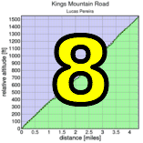
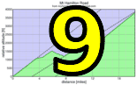

|  |  |
 |
|
Mt Hamilton
|
RSVP for today's climb after the previous week's climb!
| Hamilton is on! Rain appears to be clearing at the site, and the summit rain gauge shows no precipitation. See you there, and bring warm clothes!!! |
| results? | right here! |
| profile |  |
| distance | 18.4 miles (29.6 km) |
| climbing | 4399 ft (1340 meters) |
| grade | 4.53% |
| where? | see below |
| when? | 24 Nov 2011 |
| what time | registration 8:15 to 9:20 climb starts @ 9:30 |
| RSVP | check back later! |
| waiver | Please fill one out before the climb! |
| how? |  |
| how much? | $10 (free for juniors and those with volunteer credit) |
| why? | why not? |
| coordinator | |
| volunteers | sign up! |
| aerial view | Stanford Cycling |
| weather | Weather Underground summit (current) NWS service (at altitude) web cam |
| deja-vu? | 1995(8) 1996(9) 1997(9) 1998(1) 1998(7) 2006(7) 2007(9) 2008(9) 2009(9) 2010(9) |
| BikeMap | |
Sorry, folks! Our insurance requires all riders wear helmets during the climb, and we follow the USA Cycling rule against ear buds or other head phones. Rock to tunes before the climb, perhaps, but we need riders to pay attention to what's happening during the climb...
As tradition as demanded, generation after generation, since the time of the ancients, we meet at the corner of Mt Hamilton Road and Alum Rock Ave in San Jose.
Registration ends 9:15. At 9:30, we ride, as ride we must...
Volunteers make Low-Key tick! Without them, we no longer function. Please sign up for any week in the series using our new volunteer form! Thanks!!!
Low-Key is all about a group of friends riding up a hill together. It's like any other informal group ride, except we time you to the top and report the results on our web site. But we have no road closures, no lead vehicle, no follow vehicle. We are traffic, sharing the roads with other traffic, following the laws and courtesy which applies to traffic. Think of it as a human-assisted Strava. We're each responsible for our own actions out there, on and off the bike, both as users of the road as as courteous visitors to the neighborhoods we pass through. "Ceci n'est pas un race".
{kind=link}